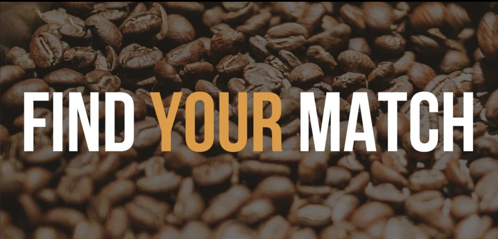

There are two datasets in our project analysis. One is from the Coffee Quality Institute to rate coffee based on their acidity, sweetness, aroma, altitude, and region, offering an objective ratings about coffee. The other one is from the “Great American Coffee Taste Test”, which examines consumer preferences.
In the Exploratory Analysis tab, you will find:
The trends and distributionsof objective coffee ratings by year, species, varieties, processing methods, altitude, and country of origins
The coffee-related lifestyle topics, such as brewing methods, reasons for drinking coffee, daily consumption habits, favorite coffee types, spending patterns, caffeine knowledge, and pricing preferences
In the Statistical Analysis tab, you will find:
The statistical analysis for the objective coffee ratings about what factors truly affecting the coffee scores and whether coffee processing methods make a big difference in ratings
The statistical analysis for the coffee-related lifestyle topics, showing interesting demographic facts about coffee consumers and there preferences between two different coffee
The Shiny tab will help you explore and identify your preferred coffee processing methods.
The Report tab provides a comprehensive overview of our analytical procedure, outlining each step in detail, and also a discussion about our findings combining the two datasets together.
ratings_df = read_csv("data/coffee_ratings.csv") %>%
janitor::clean_names() %>%
select(total_cup_points, species, country_of_origin,
region, grading_date, variety,processing_method,
aroma, flavor, aftertaste, acidity, body, balance,
sweetness, moisture, color, altitude_low_meters,
altitude_high_meters, altitude_mean_meters,) %>%
mutate(grading_year = str_extract(grading_date, "\\d{4}"),
species = as.factor(species),
variety = as.factor(variety),
processing_method = as.factor(processing_method),
moisture = as.factor(moisture),
color = as.factor(color))coffee_counts = ratings_df |>
mutate(
country_of_origin = tolower(country_of_origin),
country_of_origin = case_when(
country_of_origin %in% c("united states", "united states (hawaii)", "united states (puerto rico)") ~ "united states",
TRUE ~ country_of_origin)
) |>
group_by(country_of_origin) |>
summarise(count = n()) |>
ungroup() |>
mutate(iso3 = countrycode(country_of_origin, "country.name", "iso3c"))
plot_ly(
data = coffee_counts,
type = "choropleth",
locations = ~iso3,
z = ~count,
colorscale = "RdYlGn",
text = ~country_of_origin,
colorbar = list(
title = "# of Coffee Varieties",
thickness = 10)
) %>%
layout(
title = "Coffee-Producing Countries (based on our dataset)",
geo = list(
projection = list(type = "natural earth")
)
)Click on the video below for a brief walk through of the website.